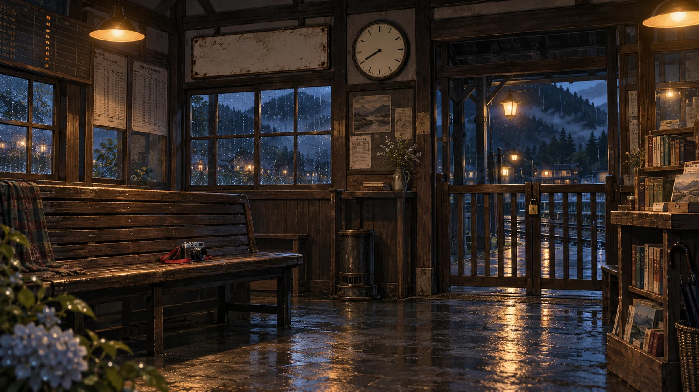

04 / KIRIYAMA STATION霧山駅・待合室
あなたが選ぶ、次の列車
23:47 / 一緒に帰る約束
最後の一枚は、あなたの手で。
撮っていいと伝えた人と、帰りの約束。残したい構図を選ぼう。
23:47の約束 / 完
第1幕 / 相棒を発見
相棒の、もう一つの秘密。
透は、閉鎖ホームにいた。栞の嘘は、彼を守るためだった。
それなら港の映像に写った、透の傘を持つ人物は誰なのか。
第1幕 「映像の嘘」

あなたが選ぶ、次の列車
23:47 / 一緒に帰る約束
撮っていいと伝えた人と、帰りの約束。残したい構図を選ぼう。
23:47の約束 / 完
第1幕 / 相棒を発見
透は、閉鎖ホームにいた。栞の嘘は、彼を守るためだった。
それなら港の映像に写った、透の傘を持つ人物は誰なのか。